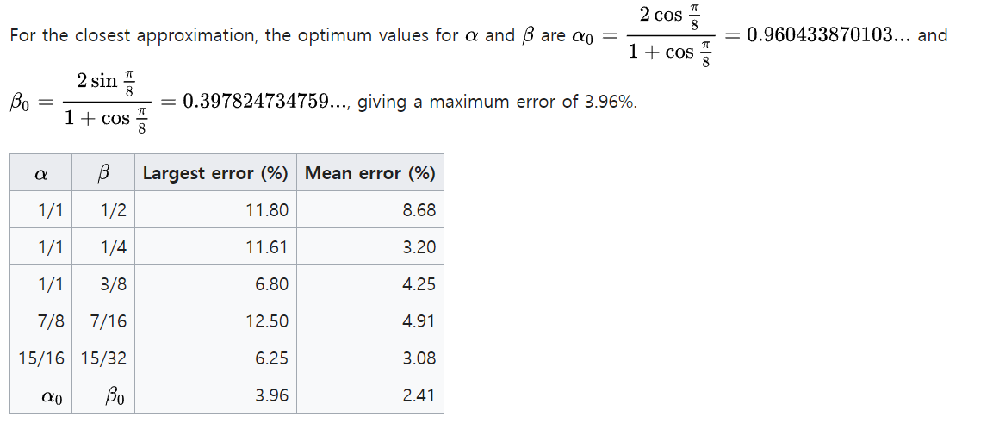

Alpha max plus Beta min은..
Alpha max plus Beta min 알고리즘은 두 제곱의 합의 제곱근을 고속으로 근사하는 방법입니다. 이 계산은 직각 삼각형의 빗변 길이를 구하거나, 2차원 벡터의 놈, 또는 실수와 허수부를 가진 복소수 z = a + bi의 크기를 구하는 데 사용되는 유용한 기능입니다.
이 알고리즘은 계산 비용이 높은 제곱 및 제곱근 연산을 수행하는 대신 비교, 곱셈 및 덧셈과 같은 간단한 연산을 사용합니다. α와 β 매개변수를 적절하게 선택함으로써 곱셈 연산을 이진 자릿수의 단순한 시프트로 줄일 수 있습니다. 이는 고속 디지털 회로 구현에 특히 적합합니다.
알파 맥스 플러스 베타 민 알고리즘은 다음과 같이 표현할 수 있습니다:
\[ \sqrt{A^2 + B^2} ≈ α \cdot max(A, B) + β \cdot min(A, B) \]
여기서 A와 B는 주어진 두 수이고, max(A, B)는 A와 B 중 큰 값을 나타내며, min(A, B)는 작은 값을 나타냅니다. α와 β는 근사치를 최적화하는 선택된 매개변수입니다.
이 알고리즘은 두 제곱의 합의 제곱근을 직접 계산하는 것에 비해 빠르고 계산적으로 효율적인 대안을 제공하면서도 합리적인 정확도를 유지합니다.

Benchmark of Alpha max plus Beta min
# 기본 제곱근 계산 함수
sqrt_sum_of_squares <- function(a, b) {
return(sqrt(a^2 + b^2))
}
# 알파 맥스 플러스 베타 민 근사 함수
alpha_max_plus_beta_min <- function(a, b, alpha, beta) {
return(alpha * max(a, b) + beta * min(a, b))
}
# 테스트 케이스 생성
num_tests <- 10000
test_cases <- data.frame(a = runif(num_tests), b = runif(num_tests))
# 파라미터 설정
alpha <- 0.960
beta <- 0.397
# 기본 제곱근 계산 시간 측정
start_time <- Sys.time()
for (i in 1:num_tests) {
sqrt_sum_of_squares(test_cases$a[i], test_cases$b[i])
}
end_time <- Sys.time()
sqrt_time <- end_time - start_time
# 알파 맥스 플러스 베타 민 계산 시간 측정
start_time <- Sys.time()
for (i in 1:num_tests) {
alpha_max_plus_beta_min(test_cases$a[i], test_cases$b[i], alpha, beta)
}
end_time <- Sys.time()
approx_time <- end_time - start_time
# 결과 출력
cat("기본 제곱근 계산 시간: ", sqrt_time, "\n")
cat("알파 맥스 플러스 베타 민 근사 시간: ", approx_time, "\n")
## 기본 제곱근 계산 시간: 0.09882092
## 알파 맥스 플러스 베타 민 근사 시간: 0.03761482